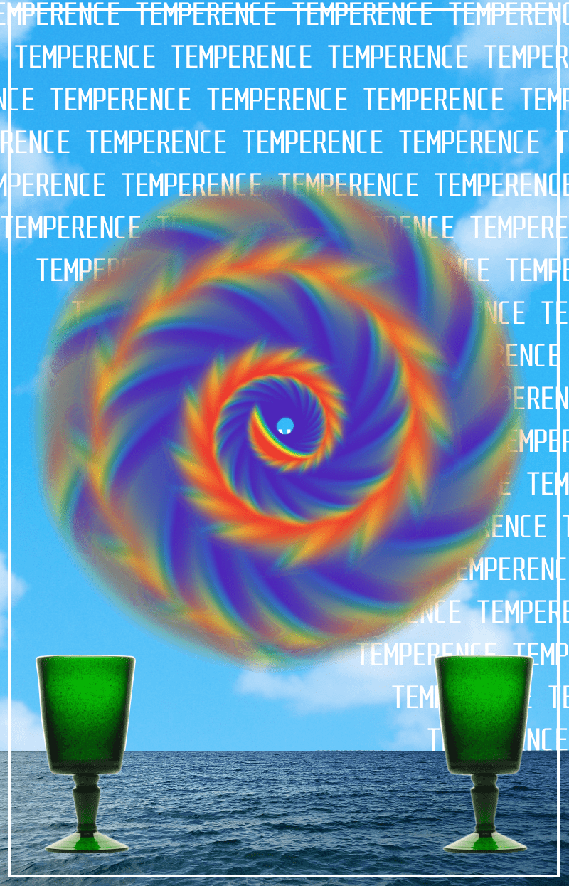
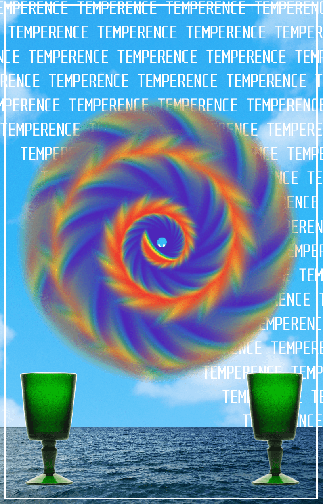
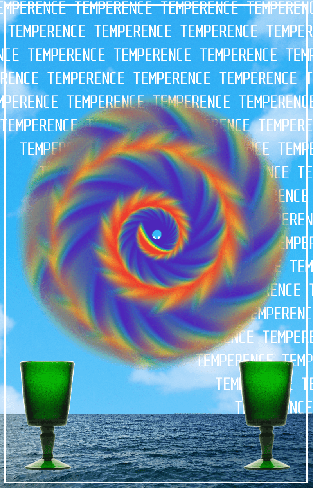

An optimistic card, Temperance encourages you to find balance in your life and approach problems with a calm demeanour. It recognizes that opposing forces need not be at war within you. Tread carefully in any major decisions you make, with confidence that good decisions will lead to a good resolution for you.

Description from trustedtarot.com